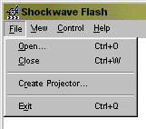

Creating Flash Projectors


Well, Flash can be used to create stand-alone projector movies, that enables you to play Shockwave movies on ALL computers, even though, the user doesn't have Shockwave. This is not for use on the web, but is excellent if you need to show a client your work. Just send him a disk with your site.
Sorry Mac-users, i have a PC, so i don't know how the projector thing works for mac.
Making the .exe file:

Well, click File > Create projector.
Choose your filename, and save.
Creating popup windows that work in projectors:
Will add later
This should do the trick!